# BrickGame v3.0 aka Tetris + Snake Xenzia + Car Racing 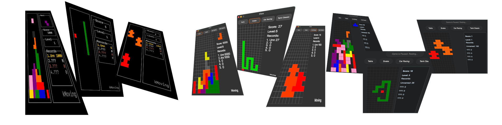 BrickGame v3.0 is a continuing of [BrickGame v2.0](https://github.com/arseniisemenow/c-cpp-brickgame-cli-desktop-tetris-snake-1). ## BrickGame v1.0 backend-frontend connection 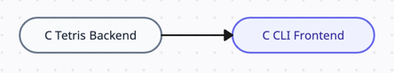 In that version we maintain **only one** module of backend and frontend written on C language. ## BrickGame v2.0 backend-frontend connection 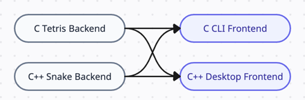 In that version we maintain **two** modules of backend and frontend written on C and C++ languages ## BrickGame v3.0 backend-frontend connection 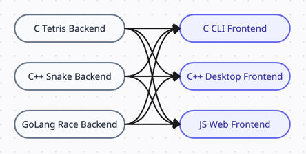 In that version we maintain **three** modules of backend and frontend written on C, C++ and Go languages ## Features - Classic Tetris gameplay with the following mechanics: - Rotation of tetrominoes - Horizontal movement of tetrominoes - Accelerated tetromino falling (by holding the down arrow key) - Display of the next tetromino - Line clearing - Game over when the tetromino reaches the top of the game field - Classic Snake gameplay with the following mechanics: - Snake move through board automatically - Snake able to eat fruit placed on the board - The game is over if snake's length exceed 200 segments (impossible to exceed, possible to reach) - The snake is dying when colliding with itself - The snake is dying when colliding with walls - The user is able to change snake's direction - Support for all physical buttons on the console: - Start game - Enter - Pause - P - End game - Esc - Up arrow - Change direction to the up - Down arrow - Change direction to the down - Left arrow - Change direction to the left - Right arrow - Change direction to the right - Matrix-based game field with dimensions corresponding to the console's size (10x20 pixels) - Unit tests for the game logic library, achieving 85% code coverage ## Additional Mechanics ### Score Calculation Tetris - 1 line cleared: 100 points - 2 lines cleared: 300 points - 3 lines cleared: 700 points - 4 lines cleared: 1500 points ### Score Calculation Snake - 1 fruit: 1 score ### High Score Tracking - Display of the player's current score and highest score achieved - Highest score is stored in a file or embedded database and persists between game sessions ### Level Progression Tetris - Progression of levels every 600 points - Increasing level increases the speed of tetromino falling ### Level Progression Snake and Car Racing - Progression of levels every 5 score - Increasing level increases the speed of the game ## Installation 1. Clone the repository. 2. Run `make install` to install the project. 3. Run `make run_cli` to start playing in cli. 4. Run `make run_desktop` to start playing in desktop. 5. Run `make run_web` to start playing in web. ## Usage Tetris - Use the arrow keys to move and rotate tetrominoes. - Press the down arrow key to make tetrominoes fall faster. - Press the up arrow key to rotate tetrominoes. ## Usage Snake - Use the arrow keys to change snake direction. - ## Usage Car Racing - Use the arrow keys to change car position. ## Gameplay CLI <img src="media/gifs/cli-tetris.gif" width="250" height="500"/> 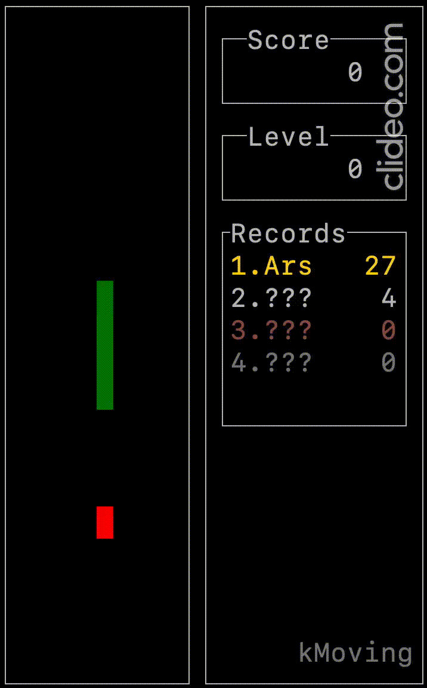 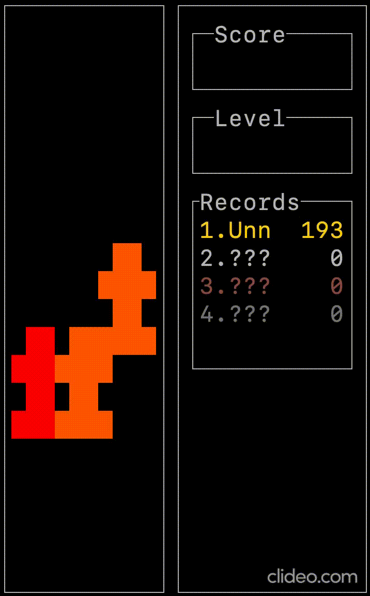 ## Gameplay Desktop 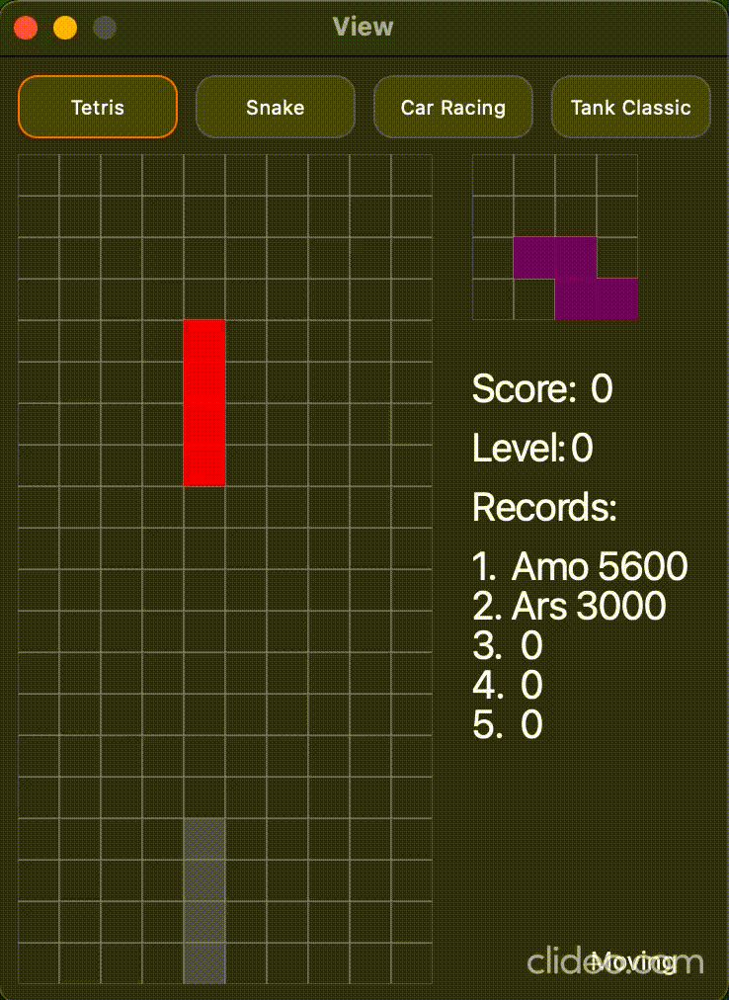 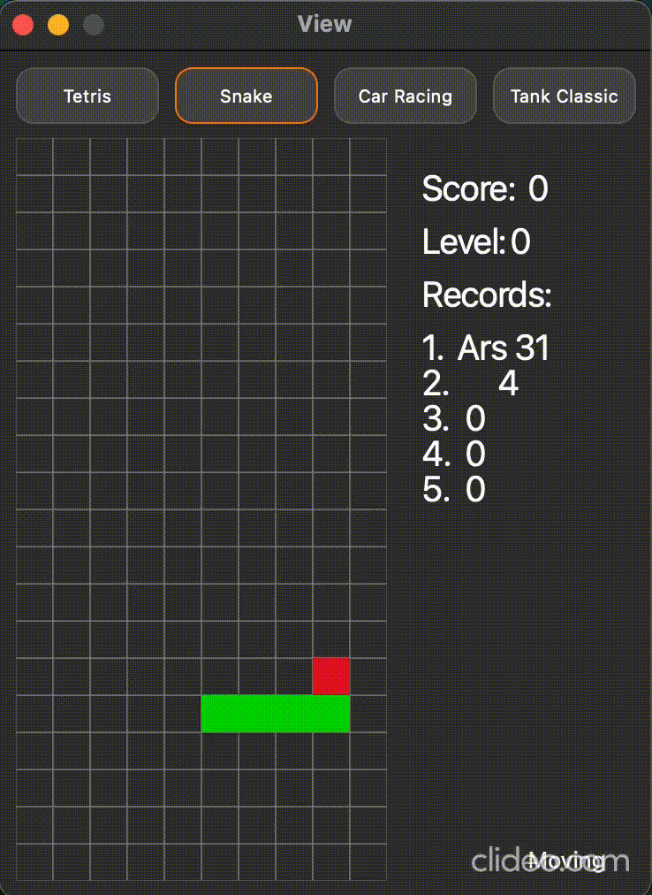 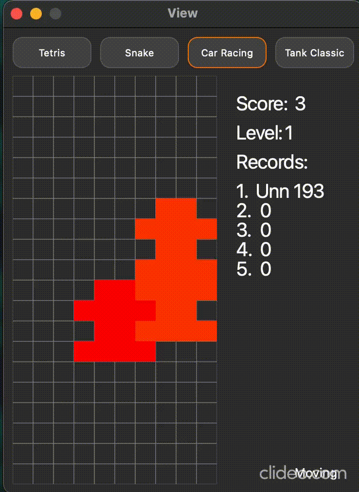 ## Gameplay Web <img src="media/gifs/web-tetris.gif" width="250" height="300"/> 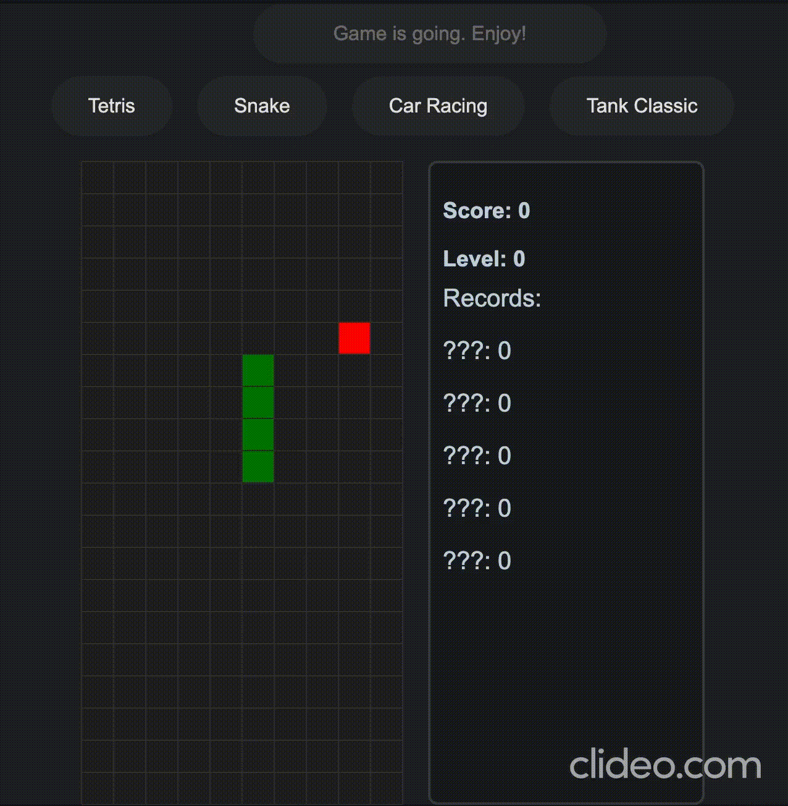 <img src="media/gifs/web-car-racing.gif" width="250" height="300"/> ## Finite State Machine (FSM) Diagram Tetris 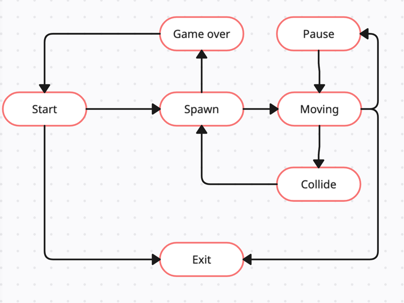 ## Finite State Machine (FSM) Diagram Snake 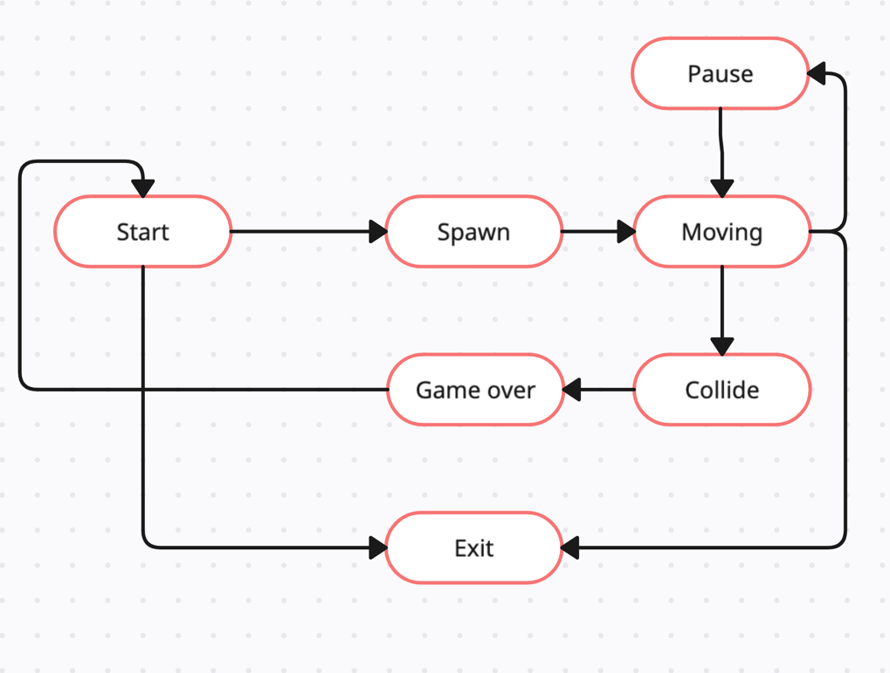 ## Finite State Machine (FSM) Diagram Car Racing 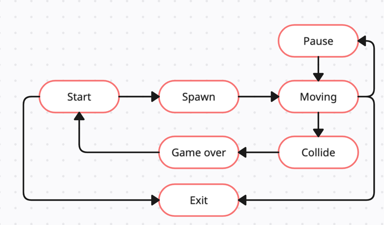